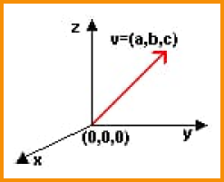
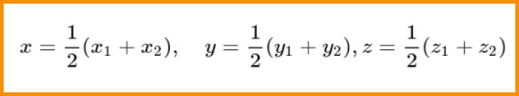
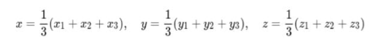
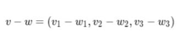

VETORES EM R
Existe uma estreita relação entre vetores no espaço R² e no espaço R³. Na verdade, o conceito de
vetor geométrico nos espaços euclidianos é sempre realizado da mesma forma, o que difere são as
aplicações mais ricas que existem em R³.
Definição: Um vetor (geométrico) no espaço R³
é uma classe de objetos matemáticos (segmentos de reta) que tem a mesma direção, mesmo sentido e
mesma intensidade. Esta classe de equivalência de objetos com as mesmas características é
representada por um segmento de reta desta família (representante).
O representante escolhido, quase sempre é o vetor v cuja origem é (0,0,0) e extremidade é o terno ordenado (a,b,c)do espaço R³, razão pela qual denotamos este vetor por: v=(a,b,c). Se a origem do vetor não é a origem (0,0,0)∈R³, realizamos a diferença entre a extremidade e a origem do vetor. Por exemplo, se um vetor v tem origem no ponto (1,2,3) e extremidade no ponto (7,12,15), o vetor v=(6,10,12), pois:
Existe uma definição mais ampla do conceito de vetor (nem sempre geométrica) que envolve uma gama variada de objetos matemáticos como: matrizes, conjuntos, funções, soluções de equações diferenciais, etc.
SOMA DE VETORES
Se v=(v¹,v²,v³) e w=(w¹,w²,w³), definimos a soma dos vetores v e w, por:
v+w=(v¹+w¹,v²+w²,v³+w³)PROPRIEDADES DAS SOMAS DOS VETORES
Fecho:
Para quaisquer vetores u,v∈R³, a soma u+v está em R³.
Comutativa:
Para quaisquer vetores u,v∈R³ | v+w=w+v.
Associativa: Para quaisquer vetores $u,v,wR^3 : u+(v+w)=(u+v)+w.
Elemento neutro: Existe um vetor θ=(0,0,0)∈R³ tal que para todo vetor u∈R³, se
tem: θ+u=u.
Elemento oposto: Para cada vetor v∈R³, existe um vetor or −v∈R³ tal que: v+(−v)=θ
APLICAÇÕES GEOMÉTRICAS
Ponto Médio de um segmento: Dado um segmento de reta, cujas extremidades são também as extremidades dos vetores v¹=(x¹,y¹,z¹)
e v²=(x²,y²,z²), o ponto médio deste segmento é dado por m=(x,y,z) onde:
Centro de Gravidade de um triângulo: Consideremos os vértices de um triângulo, dados pelas extremidades dos vetores v¹=(x¹,y¹,z¹), v²=(x²,y²,z²) e v³=(x³,y³,z³). O centro de gravidade deste triângulo é dado pelo vetor g=(x,y,z) onde
DIFERENÇA DE VETORES
Se v=(v¹,v²,v³) e w=(w¹,w²,w²) são vetores em R³, definimos a diferença entre v e w, por:
Se k é um número real e v=(a,b,c)um vetor em R³, definimos o produto de k por v, como:
kv=(ka,kb,kc)
PROPRIEDADE DO PRODUTO DE ESCALAR POR VETOR
Quaisquer que sejam os escalares a,b,c e os vetores v e w em R³, temos
E1: ¹v=v
E2: (ab)v=a(bv)=b(av)
E3: Se av=bv e v≠θ então a=b
E4: k(v+w)=kv+kw
E5: (a+b)v=av+bv
MÓDULO DE UM VETOR POR VETORES UNITÁRIOS
O módulo ou comprimento do vetor v=(x,y,z) é definido por:

Um vetor unitário é o que tem o módulo (comprimento) igual a 1.
Exemplo: Existe um importante conjunto com três vetores unitários de R³:
i=(1,0,0),j=(0,1,0),k=(0,0,1)
Estes três vetores formam a base canônica para o espaço R³, o que significa que todo vetor v=(a,b,c) do espaço R3 pode ser escrito como combinação linear dos vetores i, j e k, assim:
v=(a,b,c)=ai+bj+ck
Para obter um versor de v, isto é, um vetor unitário com a mesma direção e sentido que um vetor v, basta dividir o vetor v pelo seu módulo |v|, isto é:
Para construir um vetor w paralelo a um vetor v, basta multiplicar um escalar k pelo vetor v, isto é:
w= kv
As três projeções ortogonais do vetor v=(a,b,c)sobre os planos X=0, Y=0 e Z=0, são respectivamente, dadas por:
vx=(0,b,c),vy=(a,0,c),vz=(a,b,0)